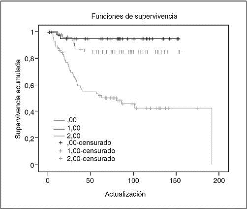
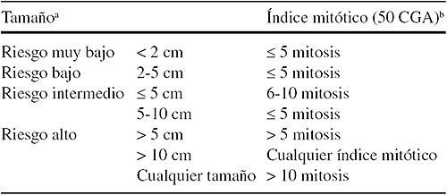
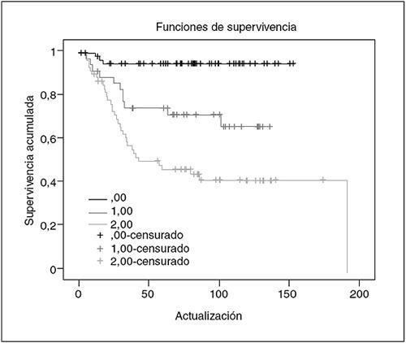
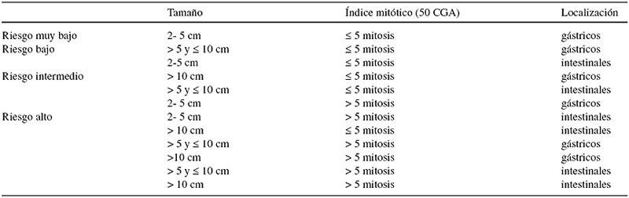

Tumores del estroma gastrointestinal

2.3 Factores pronósticos
Índice de Fletcher
El índice de Fletcher se desarrolló en 2002 para estimar el riesgo de recidiva en base al número de mitosis cada 50 campos de gran aumento (CGA) y el tamaño del tumor primario se desarrolló en 2002 basándose en estas dos variables de mayor importancia pronóstica (tabla 4 y fig. 1). Cualquier GIST tiene un potencial maligno, y el índice permite clasificar en categorías de riesgo a los pacientes sometidos a una resección completa de un GIST.
Figura 1
Análisis de supervivencia libre de enfermedad según grupos de riesgo de Fletcher en población de 162 pacientes
En 288 pacientes que nunca recibieron imatinib, el índice de Fletcher mostró que el 50% de los que tenían un riesgo alto fallecía en los 2,5 años siguientes al diagnóstico, el 68% de ellos a causa del tumor; el 50% de los casos con un tumor diseminado moría en 1,5 años (el 69% a causa del tumor), mientras que el resto de los grupos de riesgo tuvo una supervivencia semejante a la esperada en la población sana. En el estudio del GEIS, el grupo de alto riesgo fue un factor pronóstico independiente respecto a la supervivencia libre de recaída (SLR), sin que se apreciaran diferencias entre los otros subgrupos.
Tabla 4
Grupos de riesgo en los tumores del estroma gastrointestinal según Fletcher et al
a. El tamaño tiene en cuenta la dimensión mayor. Se admite la variabilidad al medir el tumor antes o después de la fijación y la existente entre distintos observadores.
b. Idealmente, se debería expresar el índice mitótico en relación con la superficie examinada a partir del tamaño de un campo de gran aumento (CGA).
Clasificación de Mittinen-Lassota
Al incluir los datos de localización tumoral con series amplias de GIST gástricos y yeyuno-ileales se observó que los GIST de origen gástrico presentaban mejor pronóstico por grupos de riesgo. A raíz de estos datos, los mismos autores han propuesto un nuevo índice de riesgo en el que se incluye la localización. De esta manera se discriminan mejor las poblaciones de riesgo que con el índice de Fletcher (tabla 5 y fig. 2) especialmente entre el riesgo intermedio y el bajo. El rango de riesgo para la recidiva varía desde un 2% en tumores gástricos con menos del 5 mitosis/50 CGA y con tamaños de 5 cm o menos y del 90% en GIST intestinales con más de 10 cm y más de 5 mitosis/50 CGA.
Figura 2
Análisis de supervivencia libre de enfermedad según grupos de riesgo de Miettinen en población de 162 paciente
Tabla 5
Grupos de riesgo en GIST según Miettinen et al
Nomograma clínico para GIST localizado
El Memorial (MSKCC) ha desarrollado un nomograma para predecir la supervivencia libre de recaída basado en el tamaño (cm), el índice mitótico (< 5 vs 5 mitosis/50 CGA) y la localización (estómago, intestino delgado, colon/recto u otros) que ha sido validado en series de la Clínica Mayo y del GEIS pudiendo acceder online a través de este enlace .
Además, en 2012 Joensuu publicó un modelo de predicción de riesgo mediante mapas generados a través de un conjunto de series de pacientes con GIST no tratados con terapia adyuvante, que incorporan el índice mitótico y el tamaño del tumor como variables continuas no lineales, además de la localización del tumor la ruptura tumoral también se consideraba.
Como la supervivencia de pacientes con un GIST metastásico ha cambiado sustancialmente desde la introducción del imatinib, se entiende que el análisis de la SLR sea un parámetro más fiable para evaluar el pronóstico que la supervivencia total.
Factores clínicos
La edad, la raza y el sexo no influirían en la SLR, pero para algunos autores tienen peor pronóstico los GIST originados en el intestino delgado y el recto.
En un grupo de 162 pacientes estudiado por el GEIS, si bien en el análisis univariable la localización gástrica era más a favor del índice de riesgo.
Factores anatomopatológicos
Mitosis/50 CGA (equivalente a una superficie de 10 mm2)
1 Tamaño del tumor primario
En series más recientes y homogéneas que incluyen sólo GIST con CD117, el tamaño no se mostró como un factor pronóstico independiente en el análisis multivariable, probablemente por la fuerte correlación que hay entre el tamaño y el recuento mitótico.
2 Otros rasgos anatomopatológicos estudiados
La presencia de necrosis, la atipia nuclear el subtipo histológico (epitelioide o fusocelular), la invasión mucosa o la densidad celular, sólo han mostrado importancia pronóstica en el análisis univariable.
Tipo de mutación y localización
Varios autores han encontrado una relación entre la presencia de mutaciones en el gen KIT y un peor pronóstico, relación cuestionada por otros.
Se ha analizado la influencia en la SLR del tipo y la localización de las mutaciones en KIT, y en dos estudios se ha apreciado un peor pronóstico entre los pacientes que presentaban deleciones, datos que concuerdan con los encontrados por el GEIS.
En una actualización de seguimiento de este trabajo del GEIS, se ha analizado el valor de la variable mutación crítica (la que afecta a los codones 557 y/o 558) durante todo el seguimiento (mediana, 85 meses) y en distintos lapsos (0-4 y > 4 años). La variable ha permanecido con valor pronóstico independiente para todo el seguimiento y en el primer período de 0-4 años.
Por otra parte, se comprobó que sigue manteniendo su relevancia pronóstica en SLR a pesar de incluir en la ecuación el índice de Miettinen-Lasota, en el que se incorpora la localización tumoral además del tamaño y del número de mitosis.
RECOMENDACIONES FINALES
La clasificación de grupos de riesgo de Miettinen-Lasota agrupa mejor a las poblaciones de riesgo en categorías de riesgo bajo, intermedio y alto y, por lo tanto, recomendamos su utilización. La herramienta del nomograma y los mapas de contorno son de fácil uso y acceso para establecer el riesgo de un paciente de forma individualizada y poder discutir las opciones de adyuvancia.
Las mutaciones que afecten a codones 557 y 558 confieren un riesgo para la recidiva independiente de la clasificación anterior en la experiencia de GEIS.
Este riesgo es máximo en los primeros meses tras la cirugía y luego baja drásticamente. No obstante, deberemos esperar a estudios prospectivos para comprobar el valor de esta variable.